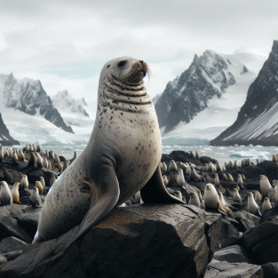

란체의 전설
북극의 거친 바다에는 "란체"라는 이름의 특별한 바다코끼리가 살고 있었습니다. 란체는 단순히 큰 몸집과 긴 어금니로만 유명한 것이 아니었습니다. 그는 다른 바다코끼리들과는 확연히 다른 운동 루틴을 가지고 있었습니다. 바로 인간들이 사용하는 중량 원판과 벨트를 이용해 딥스를 하는 것이었습니다.
란체는 최대 150kg의 중량을 들고 딥스를 할 수 있었습니다. 그는 다른 바다코끼리들보다 압도적으로 강한 체력을 자랑하며, 연구팀과 마을 주민들을 놀라게 했습니다. 란체의 이러한 능력은 단순한 우연이 아니었습니다. 그는 매일 꾸준히 운동하고, 균형 잡힌 식단을 유지하며, 충분한 휴식을 취하는 등 철저한 자기 관리를 통해 이를 이루어냈습니다.
란체의 아침
란체는 아침 일찍 일어나 북극의 차가운 바닷물을 맞으며 하루를 시작했습니다. 그는 바다 속에서 다양한 생물들과 교류하며, 자신만의 운동 루틴을 개발했습니다. 란체는 물 속에서 중량 원판을 이용해 근력 운동을 하며, 근육을 단련했습니다. 그의 일상은 규칙적이었고, 절대 게으름을 피우지 않았습니다.
균형 잡힌 식단
영양 섭취도 중요했습니다. 란체는 다양한 해양 생물과 식물을 골고루 섭취하며, 필요한 단백질과 영양소를 균형 있게 챙겼습니다. 그는 영양가 높은 식사를 통해 자신의 체력을 유지하고, 더 강해질 수 있었습니다. 또한, 란체는 충분한 휴식을 취하며, 매일 밤 깊은 잠에 들었습니다. 그의 몸은 충분히 회복할 시간을 가졌고, 이는 그의 놀라운 체력을 유지하는 데 큰 역할을 했습니다.